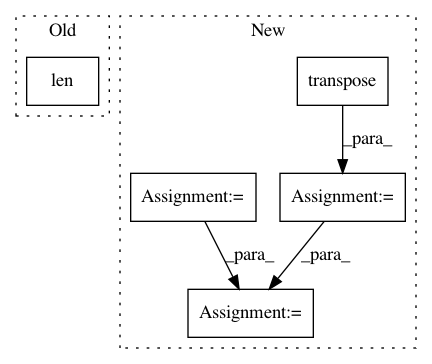

72caa3677f5f9cc09ed98324c76454c38a7e8098,lib/metric.py,MaskLogLossMetric,update,#MaskLogLossMetric#Any#Any#,137
Before Change
loss = np.sum(loss)
// Update metric
self.sum_metric += loss
self.num_inst += len(valid_inds)
class RPNLogLossMetric(mx.metric.EvalMetric):
def __init__(self):
super(RPNLogLossMetric, self).__init__("RPNLogLoss")
After Change
// label (b, p)
label = label.asnumpy().astype("int32").reshape((-1))
// pred (b, c, p) or (b, c, h, w) --> (b, p, c) --> (b*p, c)
pred = pred.asnumpy().reshape((pred.shape[0], pred.shape[1], -1)).transpose((0, 2, 1))
pred = pred.reshape((label.shape[0], -1))
// filter with keep_inds
keep_inds = np.where(label != -1)[0]
label = label[keep_inds]
cls = pred[keep_inds, label]
cls += 1e-14
cls_loss = -1 * np.log(cls)
cls_loss = np.sum(cls_loss)
self.sum_metric += cls_loss
self.num_inst += label.shape[0]
In pattern: SUPERPATTERN
Frequency: 3
Non-data size: 5
Instances
Project Name: mahyarnajibi/SNIPER
Commit Name: 72caa3677f5f9cc09ed98324c76454c38a7e8098
Time: 2018-06-04
Author: mahyarnajibi@gmail.com
File Name: lib/metric.py
Class Name: MaskLogLossMetric
Method Name: update
Project Name: tensorflow/models
Commit Name: 90f63a1e1653bfa17fde8260a4aa20231b269b7d
Time: 2017-06-29
Author: alexleegk@gmail.com
File Name: video_prediction/prediction_model.py
Class Name:
Method Name: cdna_transformation
Project Name: cornellius-gp/gpytorch
Commit Name: 229456f698c7165b0e206c814ec781004d0c2d0b
Time: 2018-03-14
Author: gpleiss@gmail.com
File Name: gpytorch/variational/mvn_variational_strategy.py
Class Name: MVNVariationalStrategy
Method Name: kl_divergence